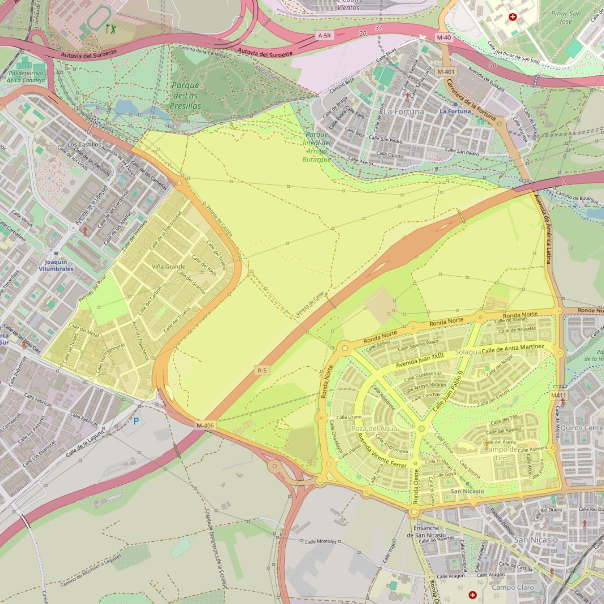

Santa Teresa del Niño Jesús

- Arciprestazgo
- Leganés
- Población
- Leganés
- Dirección postal
- c/ Violeta Parra, s/n
- Código postal
- 28918
- Extensión
- 5,49 km² (549 ha)
- Teléfono
- 916 941 122
- Correo electrónico
- santateresa.leganes@gmail.com
Arciprestazgos y parroquias de la Diócesis de Getafe
